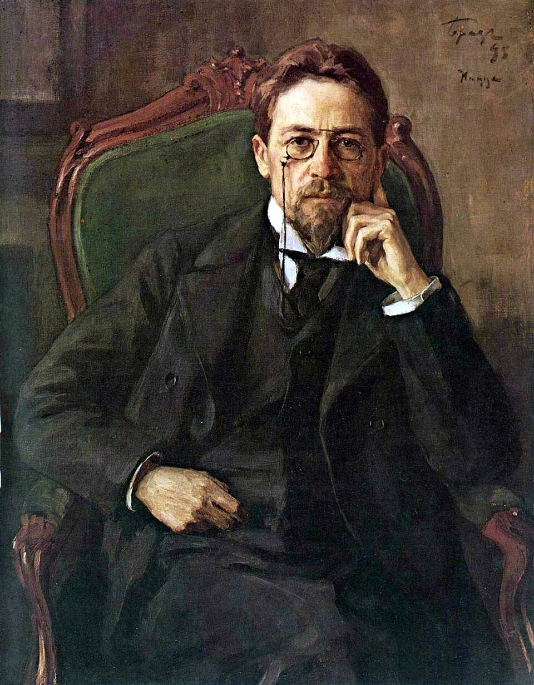

Антон Павлович Чехов — писатель, в творчестве которого органично соединились тонкий юмор, бескомпромиссная правда и редкое умение видеть человека во всей его сложности. Врач по образованию, он относился к литературе как к серьёзному делу, требующему точности и честности, и за неполные 25 лет создал более пятисот рассказов, повестей и пьес, давно ставших классикой не только русской, но и мировой словесности.
Антон Павлович
Чехов
«В человеке всё должно быть прекрасно: и лицо, и одежда, и душа, и мысли»
